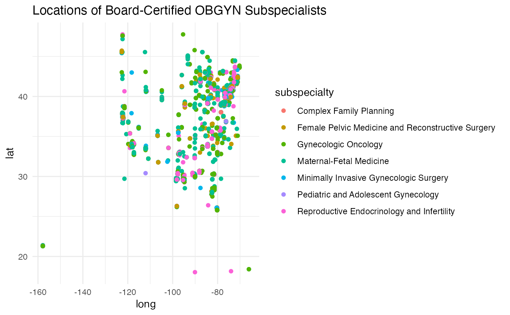

This dataset contains information about board-certified obstetrician-gynecologist (OBGYN) subspecialists in the United States, including their National Provider Identifier (NPI), names, subspecialties, and geographic coordinates.
Format
A tibble with 4,659 rows and 5 columns:
- NPI
A numeric value representing the National Provider Identifier for each physician.
- name
A character string containing the name of the physician.
- subspecialty
A character string describing the physician's OBGYN subspecialty.
- lat
The latitude of the physician's primary practice location.
- long
The longitude of the physician's primary practice location.
Source
This data was manually compiled for demonstration purposes. National Provider Identifiers (NPI) and subspecialties are based on publicly available data sources.
Details
The dataset provides details about physicians specialized in OBGYN subspecialties such as Female Pelvic Medicine, Maternal-Fetal Medicine, Gynecologic Oncology, and more. The data includes geographic information for mapping and spatial analysis.
Examples
# Load the physicians dataset
data(physicians)
# View the structure of the dataset
str(physicians)
#> tibble [4,659 × 5] (S3: tbl_df/tbl/data.frame)
#> $ NPI : num [1:4659] 1.92e+09 1.75e+09 1.55e+09 1.77e+09 1.76e+09 ...
#> $ name : chr [1:4659] "Katherine Boyd" "Thomas Byrne" "Bobby Garcia" "Peter McGovern" ...
#> $ subspecialty: chr [1:4659] "Female Pelvic Medicine and Reconstructive Surgery" "Maternal-Fetal Medicine" "Female Pelvic Medicine and Reconstructive Surgery" "Reproductive Endocrinology and Infertility" ...
#> $ lat : num [1:4659] 42.6 35.2 40.8 40.9 40.8 ...
#> $ long : num [1:4659] -82.9 -101.9 -73.9 -73.9 -73.9 ...
# Summary of subspecialties
summary(physicians$subspecialty)
#> Length Class Mode
#> 4659 character character
# Basic mapping using ggplot2
library(ggplot2)
ggplot(physicians, aes(x = long, y = lat, color = subspecialty)) +
geom_point() +
ggtitle("Locations of Board-Certified OBGYN Subspecialists") +
theme_minimal()
#> Warning: Removed 171 rows containing missing values or values outside the scale range
#> (`geom_point()`).
